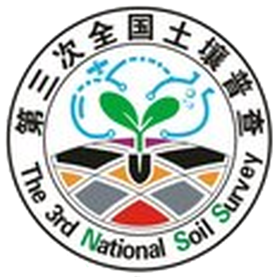

河北省第三次全国土壤普查成果编制——质量控制意见交流平台
管理员凭证
土壤类型图
土壤属性图
耕地质量评价
参考文件
全部收缴状态
已收
缺失
全部答复状态
已答复
未答复
重置
导出 CSV
导出 XLSX
全省
北片区
南片区
正在校验数据……
正在加载……
正在加载参考文件目录……
整改答复管理
选择整改答复文件
取消
确认删除
确认上传
管理员凭证
可临时覆盖项目内置凭证，仅保存在当前浏览器会话。
GitHub Token
清除
取消
保存